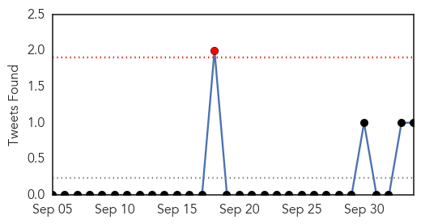

30 Day Trends
Web: 15 alerts, 6 warnings
Twitter: 1 alerts, 0 warnings
Top Articles:
- 0.985
- One Single Chart Will Make You Want To Get A Flu Shot Now
- 0.975
- 4-Year-Old New Jersey Boy Who Died Had Enterovirus: CDC
- 0.922
- California enterovirus-D68 cases jump to 14, five in greater Bay Area
- 0.884
- What to know about: flu season 2014
- 0.849
- Grundy County Health Department holding flu clinics
- 0.697
- What’s killing the seals of western Sweden?
- 0.606
- Enterovirus D-68 ruled as cause of death in Hamilton preschooler, officials say
Top Tweets:
- 0.628
- From 2004 to 2008 an average of 2465 influenza cases were notified to Queensland Health each year. In 2009 there were 18336 cases....
Web/News Articles

Tweets
Article Locations

Article Confidences